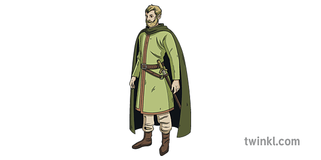
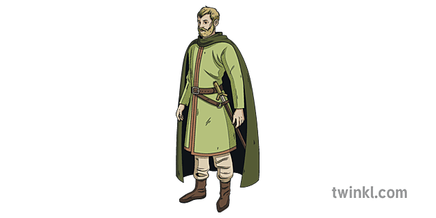

Macbeth
He is a strong man, with an imposing bearing and a determined gaze. He acts bravely in battle, but his attitude changes: he becomes ambitious, impulsive, and increasingly paranoid
When the first part of the prophecy comes true, Macbeth begins to feel an ambition he had never recognized before.
Lady Macbeth wants the prophecy to come true by murdering King Duncan to gain more power.
"'What are you saying?' she asked.
'Why are you so afraid?
You want to be king.
Are you afraid to kill him?'"
Macbeth, click to commit the crime
"Did you hear anything? Did you speak? I thought I heard a voice.
'Macbeth has murdered sleep,' it said. 'He will never sleep again.'"
"I heard nothing," Lady Macbeth said.
"You imagined it. Now, get some water and wash the blood from your hands."
 

Let's find out what they said
'My good lord,' the messenger said.
'I have just seen something very strange.
I was standing on guard and I looked towards
Birnam - and the forest began to move!'
'The queen is dead, my Lord'.
'This is not a good time for her to die.' Macbeth said.
'I cannot think about it now.'